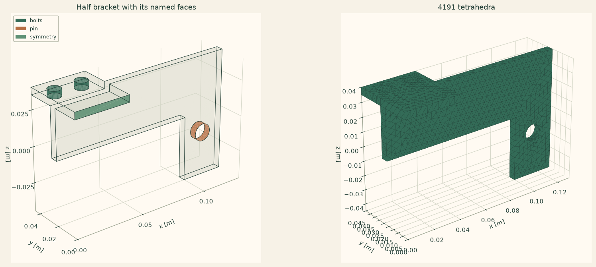

Docs › Examples › Static stress in a sheet-metal bracket
Linear elasticity · 3D
Static stress in a sheet-metal bracket
A bolted U-bracket carrying a pin load through two lugs: stresses in the arms, around the loaded holes and at the supports.
Run locally with OneSimulation. The example downloads are free. Running them requires an activated runtime. Runtime Alpha 0.2.1a7 · CPython 3.13 on macOS (Apple Silicon), Ubuntu 22.04 (x86-64), and Windows x64. Installation and activation · View pilot plans. Scope of the reference checks.

What it computes
The part is read from a STEP file with named faces. OneSimulation meshes it with curved quadratic tetrahedra, refined at the pin hole, and solves 3D small-strain elasticity with a symmetry roller on the half model. The script that builds the STEP file with the CAD objects of OneSimulation is part of the download.
What it checks
The bending stress in the arm matches beam theory to 0.06 %; the stress concentration at the pin hole is 2.71 against 2.85 from Peterson's chart.
Geometry
The notebook starts at the import of the CAD file bracket_static_stress.step: STEP (AP242), readable by any CAD program, with the names of the faces that the boundary conditions use. Put it next to the notebook.

The geometry script
The script bracket_static_stress_geometry.py builds the geometry with the CAD objects of OneSimulation and writes the file. Change a dimension there, run it, and run the notebook again.
"""Geometry of the OneSimulation example "Static stress in a bracket".
Builds one half of the sheet-metal bracket with the CAD objects of OneSimulation, names the faces
the simulation refers to and writes the part to bracket_static_stress.step.
"""
from onesim.cad.d3 import Box, UnionFromObjects
sheet, height, half_gap = 0.005, 0.040, 0.020
arm = Box(length=0.130, width=sheet, height=height, origin=(0.0, half_gap, 0.0))
lug = Box(length=0.030, width=sheet, height=0.045, origin=(0.100, half_gap, -0.045))
tab = Box(length=0.040, width=0.045, height=sheet, origin=(0.0, 0.0, height - sheet))
bracket = UnionFromObjects(objects=[arm, lug, tab])
bracket = bracket.hole(
0.012, at=(0.115, half_gap + sheet, -0.015), direction=(0.0, -1.0, 0.0)
)
bracket = bracket.hole(0.009, at=(0.010, 0.035, height)).hole(
0.009, at=(0.030, 0.035, height)
)
faces = bracket.boundaries
bracket = bracket.grouped(
pin=faces["hole.outer_wall"],
bolts=faces["hole_2.outer_wall"] | faces["hole_3.outer_wall"],
symmetry=bracket.select(faces=lambda face: abs(face.center[1]) < 1e-9),
)
bracket.save("bracket_static_stress.step")The notebook
The complete notebook, cell by cell. Run it to produce the figures and the comparison printout.
A bracket made of 5 mm steel sheet hangs from a ceiling. Its two vertical arms are joined at the back by a horizontal web; two mounting tabs bent outwards from the top of the arms carry two bolt holes each. At the front end each arm has a downward lug with a pin hole. A pin through both lugs carries a load of 2 kN straight down.
The part comes from the CAD file bracket_static_stress.step. It holds one half of the bracket (symmetric about \(y=0\)) with three named face groups: bolts, pin and symmetry. The script bracket_static_stress_geometry.py builds the part with the CAD objects of OneSimulation and writes the file.
| face | condition |
|---|---|
| bolt holes | fixed |
| pin hole | bearing pressure \(p_{max}\cos\varphi\) on the lower half, resultant 1 kN per lug |
| symmetry plane \(y=0\) | \(u_y=0\) |
| all other faces | free |
Reference. In the arm, beam theory gives the bending stress \(M(z-H/2)/I\) with \(M=(F/2)(x_{pin}-x)\). At the pin hole, Peterson's chart for a pin-loaded lug gives the stress concentration factor \(K_t=2.85\) on the net-section stress.
import numpy as np
from onesim.cad.d2 import Plane
from onesim.cad.exchange import load
from onesim.materials import IsotropicSolid
from onesim.meshing import LocalRefinement, TetrahedralMesher
from onesim.numerics import Numerics
from onesim.numerics.fem import FiniteElement, Lagrange
from onesim.numerics.linear import SparseDirect
from onesim.physics.solid_mechanics import (
FixedDisplacement,
FixedDisplacementComponents,
LinearElasticity,
Traction,
TractionFree,
)
from onesim.results.derived import CylindricalFrame, frame_field
from onesim.simulation import Problem, Simulation
from onesim.visualization import plots, theme
theme.set()Geometry and mesh
load returns the solid with its faces; the named groups of the file are available as bracket.boundaries. The mesh consists of quadratic tetrahedra that follow the round holes, 4 mm in the sheet and 1.5 mm at the pin hole.
bracket = load("bracket_static_stress.step")
faces = bracket.boundaries
mesh = TetrahedralMesher(
target_size=0.004,
geometry_order=2,
refinements=(LocalRefinement(region=faces.pin, target_size=0.0015),),
).generate(bracket)
view = plots.Camera(elevation=26, azimuth=-128)
fig = plots.figure(1, 2, size=(15, 6))
plots.geometry(
bracket,
selection={"bolts": faces.bolts, "pin": faces.pin, "symmetry": faces.symmetry},
labels=False,
camera=view,
title="Half bracket with its named faces",
ax=fig[0],
)
plots.mesh(
mesh,
groups=("all",),
legend=False,
camera=view,
title=f"{mesh.cell_count} tetrahedra",
ax=fig[1],
)
plots.show()Model
The pin presses on the lower half of the hole with the pressure \(p_{max}\cos\varphi\), \(p_{max}=F/(\pi r t)\), which adds up to half the load per lug.
load_per_bracket, sheet, height, pin, radius = (
2000.0,
0.005,
0.040,
(0.115, 0.0225, -0.015),
0.006,
)
steel = IsotropicSolid(
density=7850.0,
specific_heat_capacity=470.0,
thermal_conductivity=50.0,
youngs_modulus=200e9,
poisson_ratio=0.30,
thermal_expansion_coefficient=1.2e-5,
)
def bearing(x, y, z):
"""Traction of the pin on the hole surface."""
nx, nz = (pin[0] - np.asarray(x)) / radius, (pin[2] - np.asarray(z)) / radius
pressure = load_per_bracket / (np.pi * radius * sheet) * np.maximum(nz, 0.0)
return np.stack((-pressure * nx, np.zeros_like(nx), -pressure * nz), axis=-1)
model = LinearElasticity(domain=bracket.volume, material=steel)
problem = Problem(
name="Bracket",
geometry=bracket,
physics=(model,),
boundary_conditions=(
FixedDisplacement(boundary=faces.bolts, physics=model, value=(0.0, 0.0, 0.0)),
FixedDisplacementComponents(
boundary=faces.symmetry, physics=model, components=("y",)
),
Traction(boundary=faces.pin, physics=model, value=bearing),
TractionFree(
boundary=faces.all - faces.bolts - faces.symmetry - faces.pin, physics=model
),
),
)
numerics = Numerics(
spatial=FiniteElement(element=Lagrange(order=2)), linear_solver=SparseDirect()
)
result = Simulation(problem=problem, mesh=mesh, numerics=numerics).solve_stationary()
displacement, stress, mises = (
result.field(f) for f in (model.displacement, model.stress, model.von_mises_stress)
)Results
The bending stress across the arm at \(x=70\) mm at mid-thickness of the sheet, and the hoop stress on the wall of the pin hole. frame_field expresses the stress tensor in cylindrical components about the pin axis.
z = np.linspace(1e-6, height - 1e-6, 21)
bending = stress.evaluate(
np.column_stack((np.full_like(z, 0.070), np.full_like(z, pin[1]), z))
)[:, 0]
beam = (
load_per_bracket
/ 2
* (pin[0] - 0.070)
* (z - height / 2)
/ (sheet * height**3 / 12)
)
wall = frame_field(stress, CylindricalFrame(axis=(0, 1, 0), origin=pin)).sample(
along=faces.pin, subdivisions=3
)
hoop = wall.component("tt")
angle = np.degrees(
np.arctan2(wall.positions[:, 2] - pin[2], wall.positions[:, 0] - pin[0])
)
net_stress = load_per_bracket / 2 / ((0.030 - 2 * radius) * sheet)
print(
f"pin deflection: {1e3 * displacement.evaluate([[pin[0], pin[1], pin[2] - radius]])[0, 2]:.4f} mm"
)
print(
f"outer-fibre bending stress in the arm: simulation {np.polyfit(z - height / 2, bending, 1)[0] * height / 2 / 1e6:.2f} MPa, "
f"beam theory {beam[-1] / 1e6:.2f} MPa"
)
print(
f"stress concentration at the pin hole: simulation {hoop.max() / net_stress:.2f}, Peterson's chart 2.85"
)Figure
The von Mises stress on the deformed bracket (displacement magnified 40 times), in the mid-plane of the lug, the bending stress across the arm and the hoop stress around the pin hole.
megapascal = lambda s, position: s / 1e6
fig = plots.figure(2, 2, size=(15, 11))
plots.surface(
mises,
component=megapascal,
deformation=displacement,
deformation_scale=40.0,
limits=(0, 60),
symmetry={"planes": [((0, 1, 0), (0, 0, 0))]},
camera=view,
label="von Mises stress [MPa]",
title="Deformed bracket",
ax=fig[0],
)
plots.section(
mises,
plane=Plane(origin=(0, pin[1], 0), normal=(0, 1, 0)),
component=megapascal,
limits=(0, 32),
subdivisions=3,
label="von Mises stress [MPa]",
title="Lug with the pin hole",
xlimits=(0.095, 0.135),
ylimits=(-0.05, 0.005),
ax=fig[1],
)
plots.line(
points={"simulation": (bending / 1e6, 1e3 * z)},
reference={"beam theory": (beam / 1e6, 1e3 * z)},
xlabel="bending stress [MPa]",
ylabel="z [mm]",
title="Arm section at x = 70 mm",
ax=fig[2],
)
plots.line(
points={"simulation": (angle, hoop / 1e6)},
hlines={"Peterson's chart": 2.85 * net_stress / 1e6},
ylimits=(-10, 36),
xlabel="angle around the pin hole [°]",
ylabel="hoop stress [MPa]",
title="Hoop stress around the pin hole",
legend="upper left",
ax=fig[3],
)
plots.show()Going further
Change the sheet thickness or the lug in bracket_static_stress_geometry.py, write the STEP file again and rerun: the face names stay, so nothing else changes. Or replace the file by your own part and name its faces with part.grouped(...).